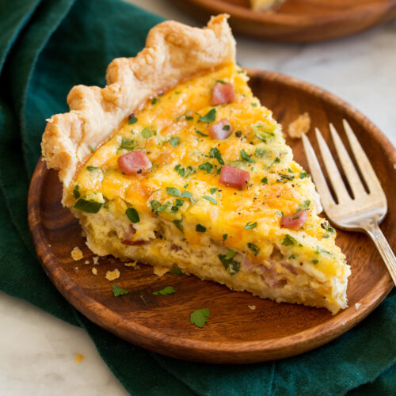
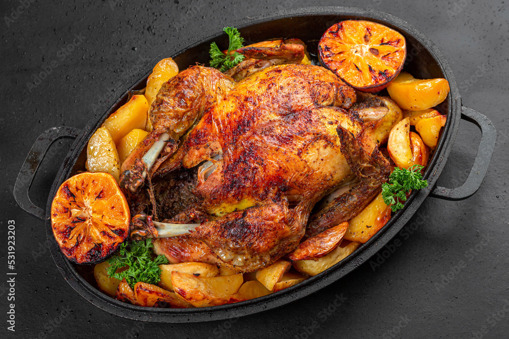
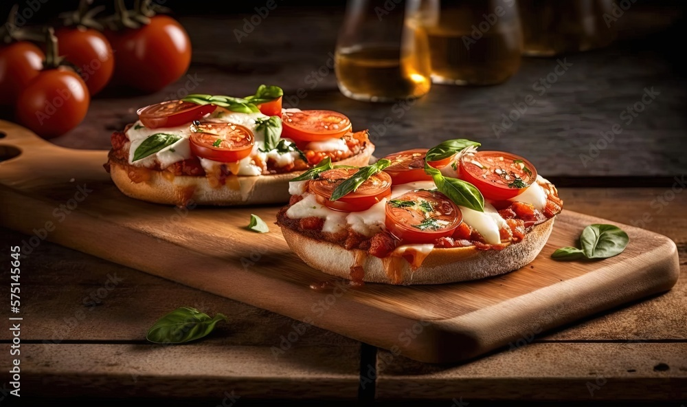
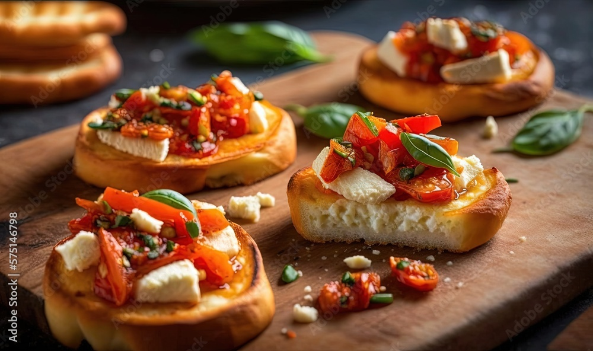
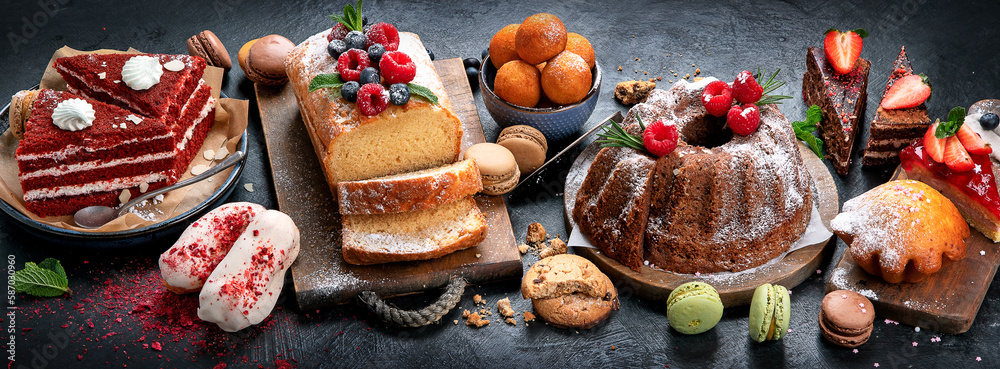

Love It or Bake It
Love It or Bake It is a website that has been created for people of all ages who enjoy spending time in their kitchen baking foods for their loved ones to enjoy. Baking is an alternative way to prepare food which is healthier than frying, and therefore lower in fat. This site includes recipes that are great for breakfast, lunch, supper, snacking, and dessert.

Featured Baked Foods
- Quiche
- Chicken
- Pizzas
- Snack
- Dessert




The above images are baked foods which are great for breakfast, lunch, supper, snacks, and dessert. They are all-around favourites which can be enjoyed any day of the week.